🌟 服务简介
OpenClaw（Clawdbot）是一个现代化的机器人流程自动化（RPA）平台。OpenClaw 可以帮助用户自动化重复性的桌面任务，提高工作效率。OpenClaw 具有直观的用户界面和强大的自动化功能，支持多种应用场景。通过 OpenClaw，您可以轻松创建、管理和执行自动化任务，无需编程经验。它还提供了丰富的集成接口，能够与其他系统和服务无缝协作。
部署流程
- 访问计算巢OpenClaw（Clawdbot）社区版部署链接，按提示填写部署参数（支持使用百炼CodingPlan）：
 2. 参数填写完成后可以看到对应询价明细，确认参数后点击 下一步：确认订单 。
3. 确认订单完成后同意服务协议并点击 立即创建 进入部署阶段。
4. 等待部署完成后进入服务实例详情页。
2. 参数填写完成后可以看到对应询价明细，确认参数后点击 下一步：确认订单 。
3. 确认订单完成后同意服务协议并点击 立即创建 进入部署阶段。
4. 等待部署完成后进入服务实例详情页。
 5. 点击服务地址并使用OpenClaw（Clawdbot）社区版。
5. 点击服务地址并使用OpenClaw（Clawdbot）社区版。

使用指南
配置钉钉机器人
创建钉钉应用
创建钉钉应用需要钉钉账号有开发者权限。可以联系组织管理员获取钉钉开放平台的开发权限，具体操作请参见获取开发者权限。
创建应用
- 访问钉钉开放平台，点击 创建 。如果创建过应用但未展示应用开发指引，点击 立即开始 进入钉钉应用页面。
- 在应用开发的左侧导航栏中，点击 钉钉应用 ，在 钉钉应用 页面右上角点击 创建应用 。
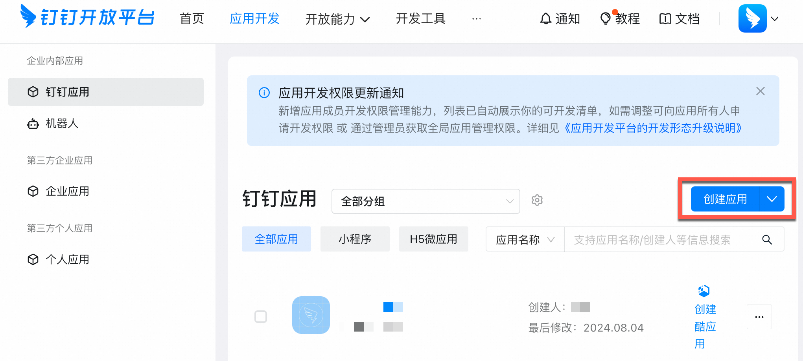
- 在 创建应用 面板，填写 应用名称 和 应用描述 ，在 应用图标 上传图标，完成后点击 保存 。
查看应用 Client ID 和 Client Secret
在左侧菜单选择 凭证与基础信息 ，复制 Client ID 和 Client Secret 。
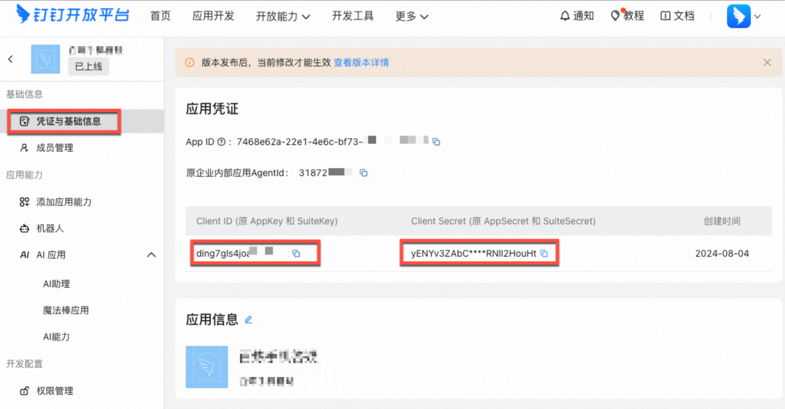
配置钉钉机器人
配置钉钉机器人
- 访问钉钉应用列表。找到刚刚创建的应用，点击应用名称进入详情页面。
- 在 添加应用能力 页面，找到机器人卡片，点击 添加 。
在机器人配置页面，打开 机器人配置 开关，可以参考下图完成配置。 消息接收模式 请选择 Stream 模式 ，然后单击 发布 。
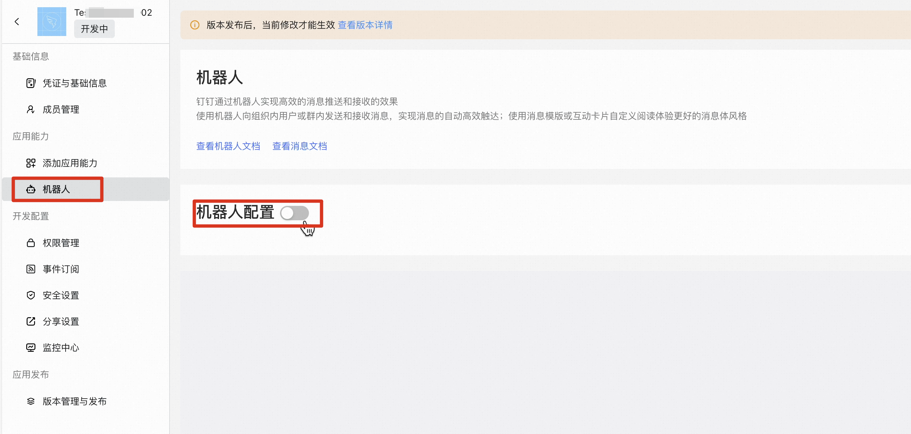
发布应用版本
应用创建完成后，如果需要将应用供企业内其他用户使用，需要发布一个版本。
- 单击 应用开发 ，在 钉钉应用 页面，点击目标应用。
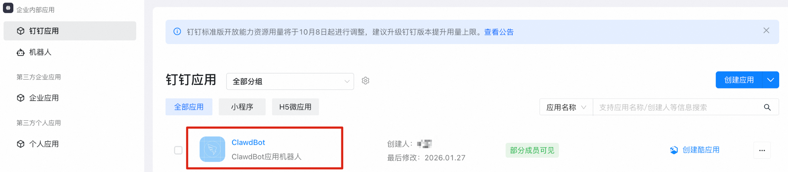
2. 在目标应用开发导航栏，单击 版本管理与发布 ，在 版本管理与发布 页面，点击 创建新版本 。进入版本详情页面，输入 应用版本号 和 版本描述 信息，选择合适的 应用可见范围 ，完成后点击 保存 。并在弹窗中点击 直接发布 。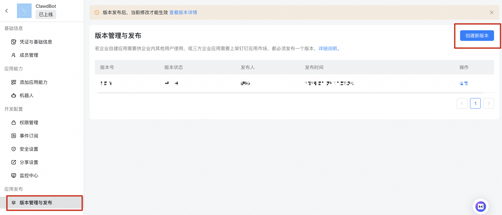
3. 在计算巢控制台配置参数，中填入钉钉应用的 Client ID 和 Client Secret，并创建服务实例。在计算巢控制台配置钉钉应用参数
在 计算巢控制台参数 中填入钉钉应用的 Client ID 和 Client Secret ，并 创建服务实例 。
测试机器人
计算巢服务实例创建完成后，你可以创建群聊或在已有群聊中添加机器人，并与机器人对话，查看效果。
- 在钉钉 群管理 中添加机器人。进入钉钉群 群设置 页面，点击 机器人 卡片区域，在 机器人管理 页面，点击 添加机器人 。在 添加机器人 的 搜索 文本框中输入目标机器人名称，并选中要添加的机器人。点击 添加 ，完成后再点击 完成添加 。
- 在钉钉群中 @机器人 进行交流互动。也可以在钉钉的搜索栏中，输入机器人名称后，在功能页检索到对应机器人，进行私聊互动。
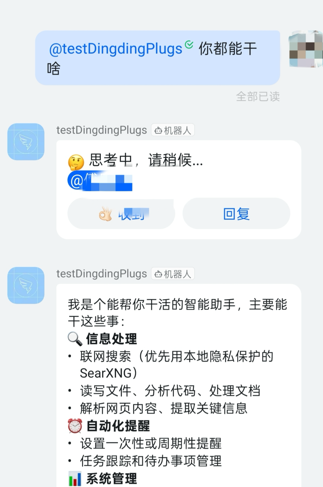
配置企业微信机器人
- 访问企业微信管理后台，在左侧导航栏单击 安全与管理 > 管理工具 > 智能机器人。单击创建机器人。
- 通过API模式创建智能机器人：
在页面底部单击API模式创建。 分别单击Token和Encoding-AESKey后的随机获取，保存Token和Encoding-AESKey。
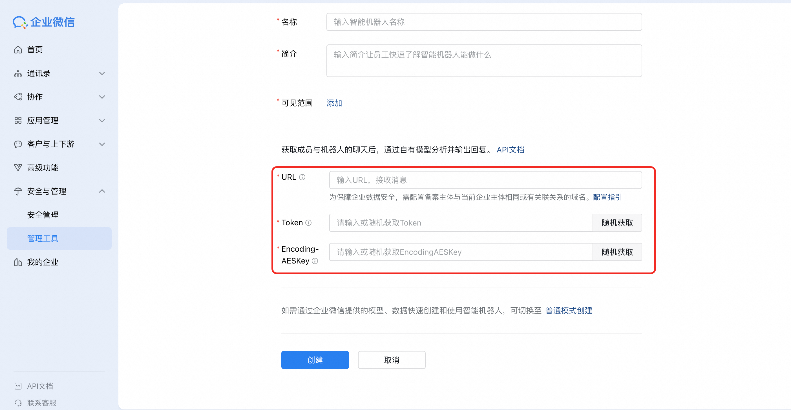
3. 在计算巢控制台配置参数， 填入企业微信的 Token 和 Encoding-AESKey ，并创建服务实例， 4. 计算巢服务实例创建完成后，回到API模式创建页面，填入URL，Token和Encoding-AESKey字段保持不变，单击创建。URL的格式为 http://IP地址:18789/webhooks/wecom。IP地址需要替换为OpenClaw服务器的IP地址。
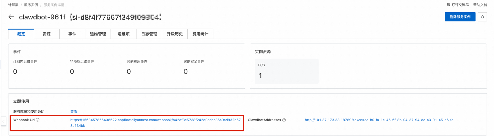
5. 方案验证： 在群聊中点击添加群成员，搜索创建完成的机器人名称，加入群聊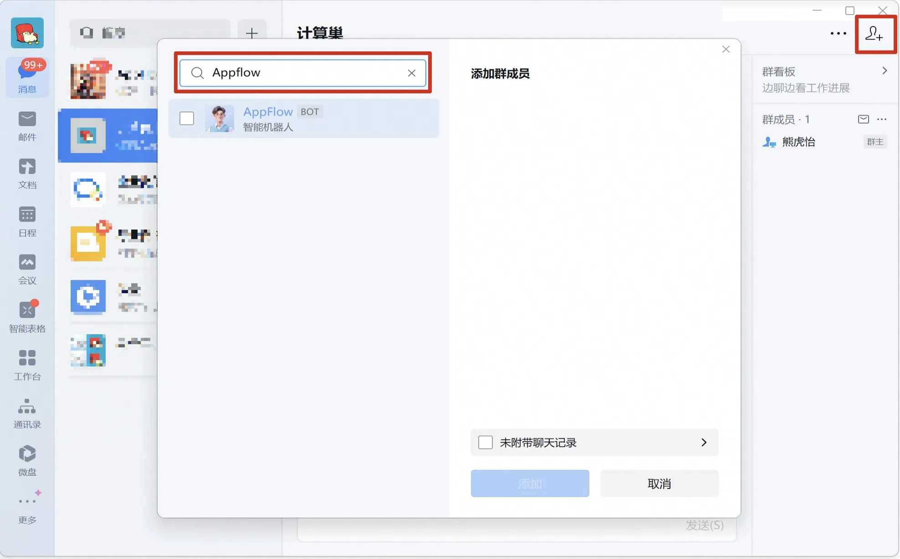
在已添加机器人的群中@机器人即可实现流式对话，效果如下：
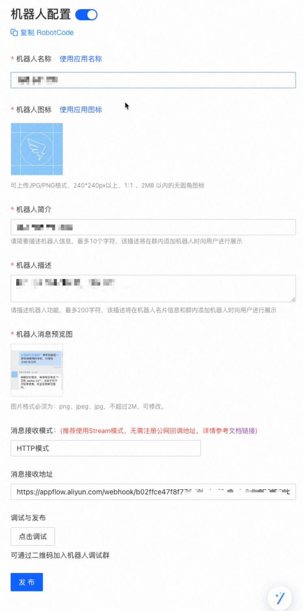
配置飞书
创建飞书应用
- 访问飞书开放平台，单击 创建企业自建应用 ，填写应用名称和描述，选择应用图标，单击 创建 。
- 左侧导航栏单击 凭证与基础信息 页面，复制 App ID （格式如
cli_xxx）和 App Secret 。 - 左侧导航栏单击 权限管理 页面，点击 批量导入/导出权限 按钮，粘贴以下 JSON 配置，单击 下一步，确认新增权限 ，单击 申请开通 。
json
{
"scopes": {
"tenant": [
"aily:file:read",
"aily:file:write",
"application:application.app_message_stats.overview:readonly",
"application:application:self_manage",
"application:bot.menu:write",
"cardkit:card:write",
"contact:user.employee_id:readonly",
"corehr:file:download",
"docs:document.content:read",
"event:ip_list",
"im:chat",
"im:chat.access_event.bot_p2p_chat:read",
"im:chat.members:bot_access",
"im:message",
"im:message.group_at_msg:readonly",
"im:message.group_msg",
"im:message.p2p_msg:readonly",
"im:message:readonly",
"im:message:send_as_bot",
"im:resource",
"sheets:spreadsheet",
"wiki:wiki:readonly"
],
"user": ["aily:file:read", "aily:file:write", "im:chat.access_event.bot_p2p_chat:read"]
}
}
4. 左侧导航栏中单击 添加应用能力 ， 选择 按能力添加 页签，找到 机器人 卡片，单击 配置 。
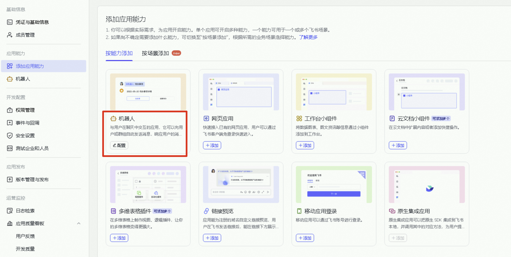
5. 配置事件订阅。- 在计算巢控制台配置参数 ，填入 App_Id 与 App_Sescret 并 创建服务实例。
- 在飞书开放平台左侧导航栏单击 事件与回调 ，在 事件配置 页签中单击 订阅方式 ，选择 使用 长连接 接收事件 ，单击 保存 。
- 在事件配置页面，单击 添加事件 ，搜索事件
im.message.receive_v1（接收消息），单击 确认添加 。 - 在 版本管理与发布 页面创建版本，填写 应用版本号 和 更新说明 ，单击 保存 ，提交审核并发布。
配置机器人
计算巢服务实例创建完成后，用户可以把机器人添加到某个群里，从而实现机器人和群内成员的互动。
目前仅支持在飞书电脑端添加机器人。若需在外部群中使用机器人，可参考配置文档机器人支持外部群和外部用户单聊。
- 按照添加路径添加机器人： ··· > 设置 > 群机器人 > 添加机器人 。
- @机器人可向机器人发送消息，向机器人发送一条消息，机器人会回复一个配对码。
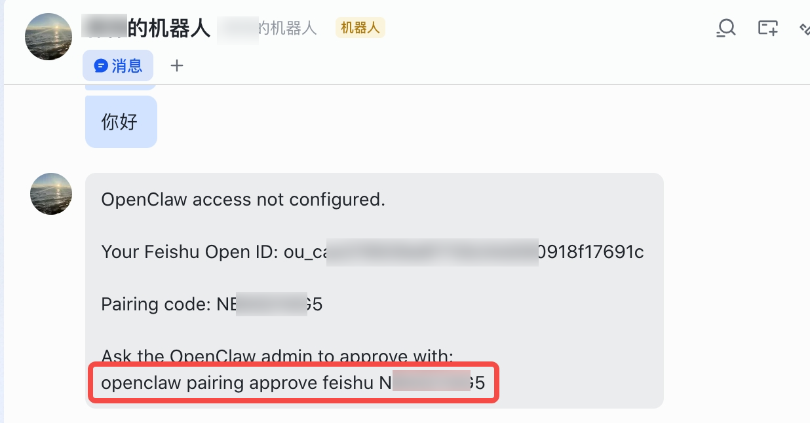
3. 在WebUI页面输入openclaw pairing approve feishu 配对码完成配对。
配对码是上一步机器人回复的配对码。
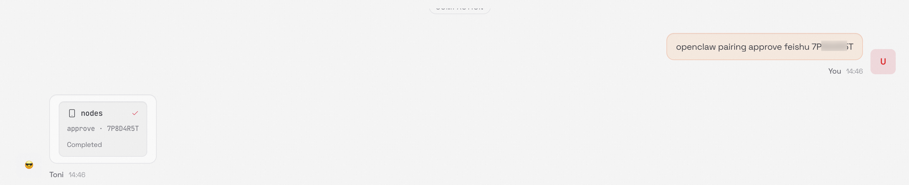
配置QQ
创建QQ机器人
- 前往腾讯QQ开放平台官网。在下方的龙虾专用入口单击去使用。
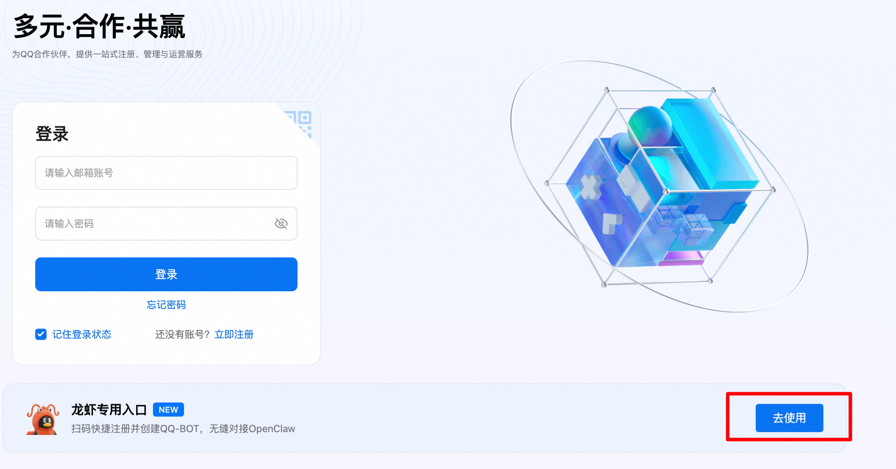
2. 在手机登录区域，扫描二维码登录QQ账号。 3. 单击创建机器人，生成新的QQ机器人。保存机器人的 AppID 和 AppSecret 。重要
请妥善保管复制的密钥信息，QQ机器人的AppSecret（机器人密钥）不支持明文保存，首次查看或忘记AppSecret（机器人密钥）需要重新生成。
OpenClaw集成QQ
在计算巢控制台配置参数， 填入QQ机器人的 AppID 和 AppSecret ，并创建服务实例。
方案验证
计算巢服务实例创建完成后，前往QQ与创建好的机器人对话。
常见问题
更改OpenClaw调用的模型
在OpenClaw服务页面，点击Config>Raw,搜索models，修改providers与agents中的模型code, 模型Code可以在百炼模型广场页面查询。
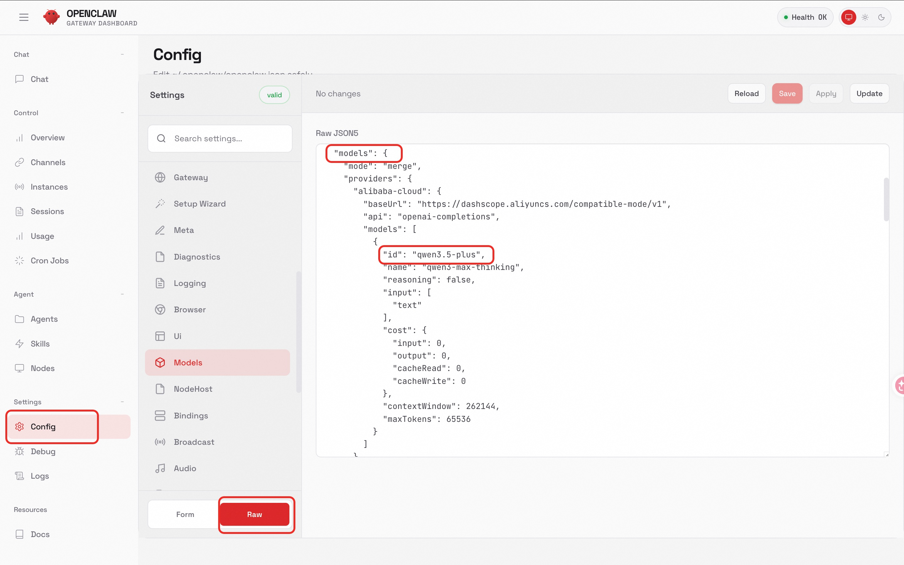
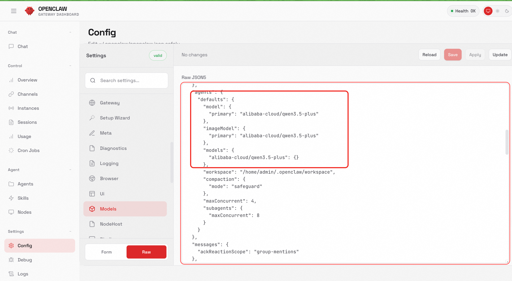
如何重启服务
服务实例>资源>执行命令：
#!/bin/bash
/opt/.swas/run-cmd.sh restart
如何执行Openclaw命令
通过admin用户远程链接ECS，然后执行Openclaw命令：
openclaw gateway status
服务无法访问
重置服务
服务实例>运维管理>重置服务>配置参数创建任务：

配置阿里云百炼Coding Plan
服务实例>运维管理>配置百炼CodingPlan>配置参数创建任务：
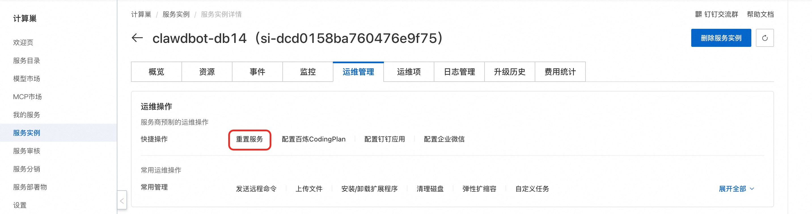
如果运维管理中无配置百炼Coding Plan的选项，可以手动执行命令创建。
服务实例>资源>执行命令：

#!/bin/bash
sh /opt/.swas/run-cmd.sh config "<<Coding Plan ApiKey>>" "domestic" > /dev/null
sh /opt/.swas/run-cmd.sh restart
配置频道
服务实例>运维管理>配置频道>配置对应参数创建任务。
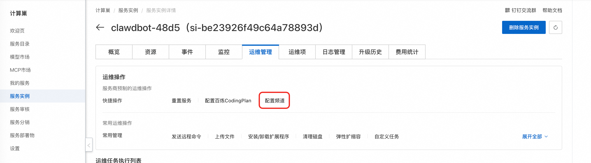
注意：服务版本在v24前的服务实例，无运维管理选项，需要手动执行命令配置
服务实例>资源>执行命令：
配置钉钉
#!/bin/bash
APP_ID="替换成钉钉ClientID"
APP_SECRET="替换成钉钉ClientSecret"
sh /opt/.swas/run-cmd.sh set-channel dingtalk "$APP_ID" "$APP_SECRET" > /dev/null
sh /opt/.swas/run-cmd.sh restart
配置企业微信
#!/bin/bash
APP_ID="替换为Token"
APP_SECRET="替换成EncodingAESKey"sh
/opt/.swas/run-cmd.sh set-channel wecom "$APP_ID" "$APP_SECRET" > /dev/null
sh /opt/.swas/run-cmd.sh restart
配置飞书
#!/bin/bash
APP_ID="替换为飞书APP_ID"
APP_SECRET="替换为飞书APP_SECRET"
sh /opt/.swas/run-cmd.sh set-channel feishu "$APP_ID" "$APP_SECRET" > /dev/null
sh /opt/.swas/run-cmd.sh restart
配置QQ
#!/bin/bash
APP_ID="替换为QQ机器人APP_ID"
APP_SECRET="替换为QQ机器人APP_SECRET"
sh /opt/.swas/run-cmd.sh set-channel qqbot "$APP_ID" "$APP_SECRET" > /dev/null
sh /opt/.swas/run-cmd.sh restart
重置配置文件
使用过程中如果遇到服务无法访问，可以尝试重置配置文件。
远程链接ECS实例，执行以下命令：
sudo su admin
cd /home/admin/.openclaw/
cp -f openclaw.json.bak openclaw.json
其中openclaw.json.bak格式的是备份的配置文件，可以选用最新的备份进行恢复。
如何使用OpenClaw（Clawdbot）
更多用法请参考OpenClaw（Clawdbot）官网文档。